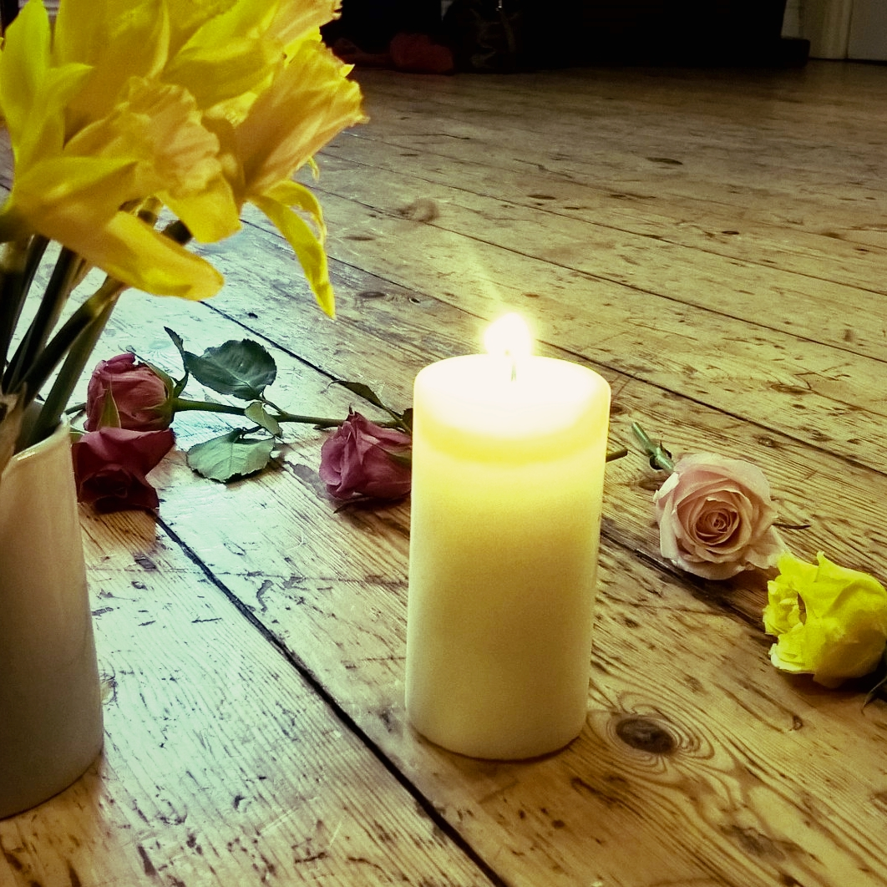

‘I believe in the power of love. In my view it is the Alpha and Omega of all life.
It is love which creates each and every one of us and is the essence which sustains us,
as we connect with each other within the bonds of friendships, family and community.’
Rev. Antoinette Doocey.
Biography
Antoinette has worked in Health Services for 30 years. Serving within a wide range of both clinical and managerial roles,
with specific focus on service developments and improvement, strategic development, policy development, and implementation and governance.
She provides Management Consultancy services with specific focus on organisational core values and service impact, managerial development, support requirements and well-being.
She started her exploration of the various faith traditions and religious beliefs of the world as a teenager, having a deep interest in the human condition and the role of spirituality within our relationships and day to day lives.
Antoinette acknowledges and respects the role which organised religion plays in many people’s lives but equally respects those who do not subscribe to any religious beliefs
or practices and who have their own understanding and beliefs, independent of organised religion.
Antoinette has been married over 30 years and has two grown up sons. She loves reading and writes a little poetry from time to time. She also loves nature, hiking and walking.
She feels blessed in her life, given the many privileges her various professional roles have enabled her to have
for example:
As a Midwife bringing new life into the world in delivering a new-born baby,
as a nurse, caring for young and older ill individuals along the life cycle continuum,
and especially the privilege of accompanying and supporting people and their families on their end of life journey.
She is deeply grateful that the gift of privilege continues in her role and service as an Interfaith Minister, in creating ceremonies for major life milestones and in being a legal marriage solemniser.
Services

As a OneSpirit Interfaith Minister Antoinette is non-discriminatory;
she serves people of all faiths and of none, all communities, diverse, marginal and homogenous.
Antoinette subscribes to the code of ethics and is a member of the professional One Spirit Interfaith minister body RIMA
see www.interfaithfoundation.org
Welcoming Diversity
Antoinette has had a life long interest in world faith paths including both religious and earth based spiritualities and beliefs.
She holds a deep respect for the rich tapestry of religious, spiritual and non-religious beliefs and faith traditions of our global community,
and acknowledges the central theme of love and respect for one another in all of these paths.
Services offered by Antoinette include:
Legal Wedding Ceremonies
Vow Renewals
Baby Namings
Funerals
Guidance for Spiritual Direction
Consultancy, which entails:
supporting groups and organisations to develop core spiritual values to best support organisational service purpose, function and direction.
Coaching and mentoring and Spiritual Guidance/Counselling services.
Your Wedding - Your Ceremony
Marriage is a major milestone in the journey of a couple’s relationship kindled by, and supported in, the energy of their unique love.
Antoinette will work with you to create a bespoke wedding ceremony which reflects your personal and life values and beliefs,
your commitment to one another and which honours you as both, the individuals, and the couple that you are.
in line with GDPR, your information will not be stored, or used for any other means than to answer your query
Testimonials
Antoinette was our minister and we feel very lucky to have had her officiate for us because
she was very attentive running up to the big event making sure to get to know us as a couple,
take our story into account and take heed of our requests as regards how the ceremony should go.
This made the whole process effortless and smooth and we both felt very relaxed with her.
She has a warm calm way that puts you instantly at ease.
She performed the ceremony with as much tenderness and professionalism as she did the preparations for it.
Thank you Antoinette for understanding our vision and making our ceremony as unique and special as it was!
Laura & Peter. July 2017
We were both charmed and humbled by the warmth and sincerity with which you helped us to craft our wedding ceremony
and were greatly impressed at how well you understood us as a couple and it was truly reflected in the ceremony.
We were absolutely delighted to have you Antoinette as our celebrant.
You are so genuine and the enthusiasm you have is infectious and really encouraged us to be brave and create the ceremony that suited us.
We would both say hand on heart that the ceremony was the most meaningful part of our wedding day.
Taking the time to put so many personal touches in made it really special and then to have you deliver it all with such warmth and sincerity is something we will be forever grateful for.
Blathnaid and Brian. August 2017
Having worked with Antoinette for several years, I have come to know her for her ability to meet people in their space
respecting their path and dedication herself to ensure they are held in sacred space.
Antoinette works from the heart, and is full of spiritual knowledge as well as integrity.
Knowing many, Antoinette would still be my number 1 minister of choice if I would be in need of someone to create a ceremony for me.
Cornelia. June 2018